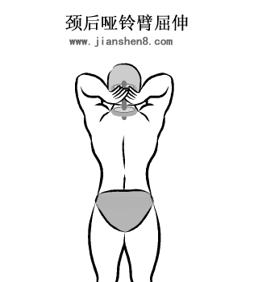
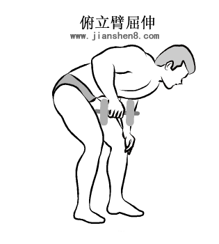
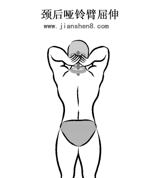
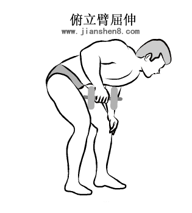
| 周一 | 部位 | 动作名称 | 组数 | 次数 | 部位 | 动作名称 | 组数 | 次数 | |
| 肩部 | 推举 | 4 | 8～12 | 周三 | 背部 | 俯身双臂划船 | 4 | 8～12 | |
| 侧平举 | 3 | 8 | 俯身单臂划船 | 4 | 10 | ||||
| 俯身侧平举 | 3 | 10 | 直腿硬拉 | 3 | 12 | ||||
| 耸肩 | 4 | 10 | 腹部 | 仰卧举腿 | 3 | 15 | |||
| 肱三头肌 | 颈后臂屈伸 | 4 | 8～12 | 仰卧起坐 | 3 | 15 | |||
| 俯身臂屈伸 | 4 | 12 | |||||||
| 周五 | 胸部 | 上斜推举 | 3 | 12 | 周日 | 大腿 | 深蹲 | 5 | 8～12 |
| 平卧推举 | 4 | 10 | 箭步蹲 | 3 | 12 | ||||
| 平卧飞鸟 | 3 | 12 | 俯卧腿弯举 | 3 | 12 | ||||
| 肱二头肌 | 交替弯举 | 3 | 12 | 小腿 | 站立提踵 | 5 | 15 | ||
| 双手哑铃弯举 | 3 | 12 | 腹部 | 仰卧举腿 | 3 | 15 | |||
| 哑铃坐姿弯举 | 3 | 12 | 仰卧起坐 | 3 | 15 |
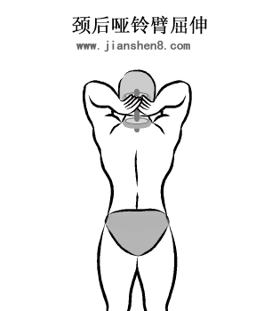
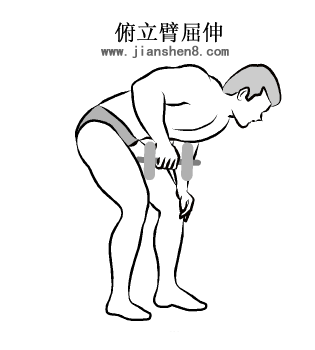
 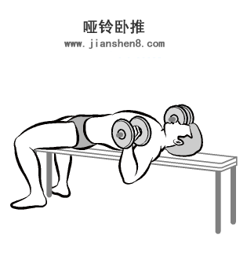
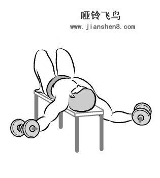
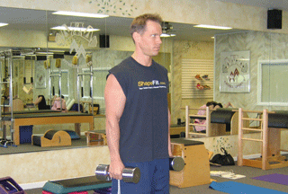
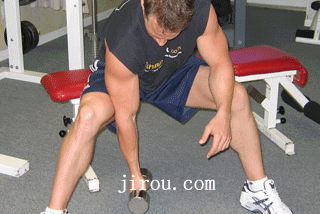
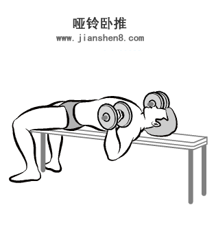
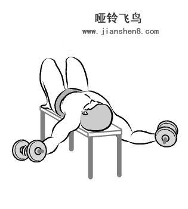
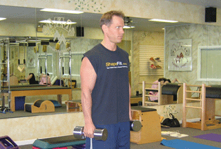
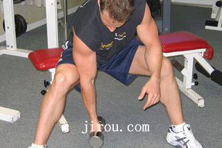